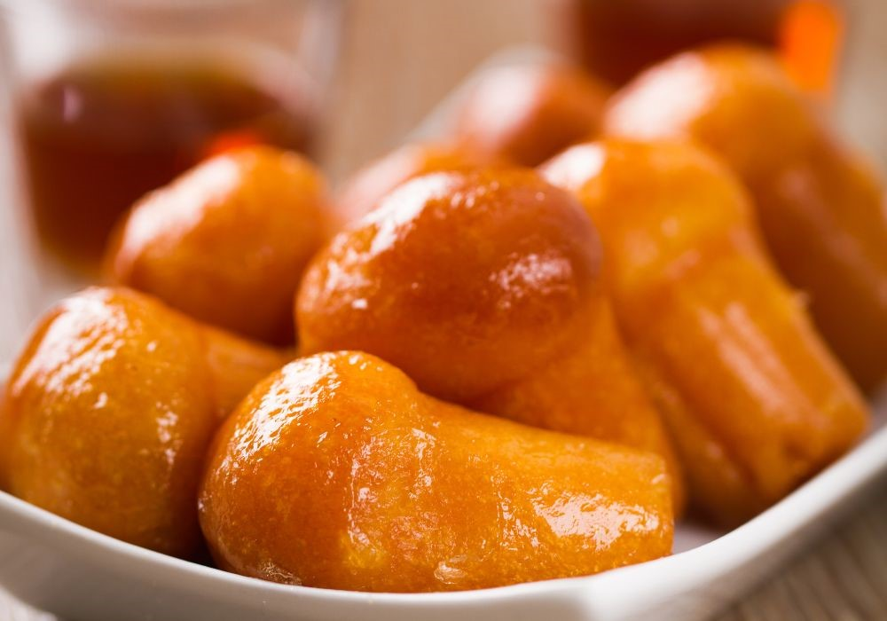

Babà

The Neapolitan Baba is an amazing cake in its simplicity. The recipe includes few ingredients,
but it is the preparation to make the real difference between success and failure. In order to
make a good baba, it is necessary to use a good and strong flour, capable of creating an elastic
and resistant glutinous mesh, able to keep a great quantity of dunking. For this reason I
recommend you to knead the baba with the help of a stand mixer equipped with a hook and
constantly monitor that the temperature of the dough does not exceed 28°C (82°F).
Ingredients:
- 500gr Bread Flour
- 500gr Eggs at room temperature
- 200gr Softened Butter
- 550gr Granulated Sugar
- 30gr Flavoring Paste for Croissants
- 25gr Fresh Yeast
- 4gr Vanilla
- 4gr Salt
- Grated Lemon Zest
- 1,5l Water
- 1 Orange Zest
- 1 pod Vanilla Bourbon
- 150gr Rum
- 100gr Abricot Jam
Steps:
- Pour the flour, sugar, and yeast into the bowl of the mixer. Knead the ingredients for a few seconds, then start adding the eggs a little at a time to hydrate the flour and favor the formation of the gluten mesh.
- Knead the dough with the hook at medium speed until the dough has formed a strong gluten mesh. To test it, you can take a piece of dough and open it with your fingers, verifying that it will form a thin but resistant layer. This proves that the gluten mesh is correctly formed. The dough temperature mustn't exceed 28°C (82°F) to not break the gluten and facilitate the following adding of the butter.
- Once the dough is ready, add flavoring mix, grated lemon zest, and vanilla.
- Then add the softened butter in several steps, letting it be well absorbed into the dough, before adding more.
- When the dough is ready, let it rest for about 15 minutes at room temperature. In the meantime, grease the baba molds.
- With hands greased with butter, pick up small amounts of dough and fill the molds to about 1/3 of their height.
- Let the baba proof at 30°C (86°F) for about 1 1/2 hours or until the dough has reached the edge of the mold.
- Bake the baba at 180°C (356°F) for about 30minutes, opening the oven door slightly during the last 10minutes of baking so that the product can dry out.
- Bring water, sugar, and flavorings (vanilla and citrus peels without the whites) to a boil. Once boiling, remove from heat, cover with foil and let cool.
- When the syrup has reached 80°C (186°F), add the rum and cover with foil. If you can, I recommend preparing the syrup the day before to obtain an excellent aromatic boost.
- Bring the syrup to 50°C (122°F) and immerse the babas in it completely. Squeeze them gently between your hands before soaking them again in the syrup. This procedure will favor the dunking of the baba and allow the syrup to reach the heart of the cake.
- When babas are well soaked, lay them on a wire rack to remove excess syrup.
- Once ready, heat the apricot jam and brush it over the babas to make them shiny and luscious.
- If desired, you can cut the Neapolitan baba lengthwise and fill it with Custard, Whipped Cream.... Or a mix of both!
Return to the main page